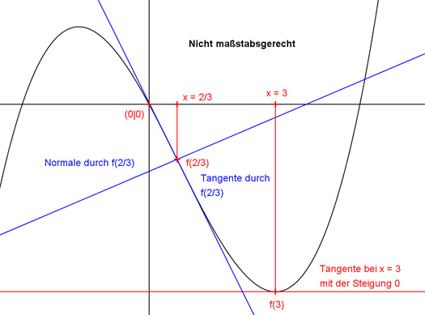

Aufgabe 29 Der Graph einer ganzrationalen Funktion 3. Grades geht durch den Punkt (0|0), hat bei x = 3 einen Extremwert, und seine Normale im Wendepunkt (2/3|f(2/3)) hat die Steigung 3/49. Wie lautet seine Funktionsgleichung?  Allgemeine Form einer ganzrationalen Funktion 3. Grades: f(x) = ax3 + bx2 + cx + d f’(x) = 3ax2 + 2bx + c f’’(x) = 6ax + 2b 4 Bedingungen: 1. Geht durch den Punkt (0|0) bedeutet: f(0) = 0 --> a * 03 + b * 02 + c * 0 + d = 0 --> d = 0 2. Hat bei x = 3 einen Extremwert bedeutet: f’(3) = 0 --> 3a * 32 + 2b * 3 + c = 0 --> 27a + 6b + c = 0 I 3. Seine Normale im Wendepunkt (2/3|f(2/3)) hat die Steigung 3/49 bedeutet zum einen: f’’(2/3) = 0 --> 6a * 2/3 + 2b = 0 --> 4a + 2b = 0 II 4. Seine Normale im Wendepunkt (2/3|f(2/3)) hat die Steigung 3/49 bedeutet zum anderen: Normale und Tangente im Wendepunkt stehen senkrecht aufeinander. Es gilt: Steigung der Normalen mN * Steigung der Tangente mT = -1. mN * mT = -1 3/49 * mT = -1 | *49 3 * mT = -49 |:3 49 mT = - ---- 3 Steigung der Tangente = - 49/3 bedeutet: f’(2/3) = -49/3 --> 3a * (2/3)2 + 2b * (2/3) + c = -49/3 (4/3)a + (4/3) b + c = -49/3 | *3 4a + 4b + 3c = -49 III III * (-1) + I * (3) -4a - 4b - 3c = 49 81a + 18b + 3c = 0 -------------------- 77a + 14b = 49 IV II * (-7) + IV -28a - 14b = 0 77a + 14b = 49 ---------------- 49a = 49 |:49 a = 1 a = 1 in II eingesetzt: 4 * 1 + 2b = 0 |-4 2b = -4 | :2 b = -2 a = 1 und b = -2 in I eingesetzt: 27 * 1 + 6 * (-2) + c = 0 27 - 12 + c = 0 15 + c = 0 |-15 c = -15 Gesuchte Funktionsgleichung: f(x) = x3 - 2x2 - 15x